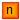

Package with thermal ports
This package provides thermal ports.
Extends from Modelica.Icons.InterfacesPackage (Icon for packages containing interfaces).
| Name | Description |
|---|---|
| HeatPort | Heat port |
|  HeatPortVec | Vector of heat port |
| HeatPortRad |
Heat port
MSL thermal port
Extends from Modelica.Thermal.HeatTransfer.Interfaces.HeatPort (Thermal port for 1-dim. heat transfer).
| Type | Name | Description |
|---|---|---|
| Temperature | T | Port temperature [K] |
| flow HeatFlowRate | Q_flow | Heat flow rate (positive if flowing from outside into the component) [W] |
Vector of heat port
Vector of n heat port
| Type | Name | Default | Description |
|---|---|---|---|
| Integer | n | 2 | No. of elements |
| Type | Name | Description |
|---|---|---|
| Integer | n | No. of elements |
| Temperature | T[n] | temperature [K] |
| flow HeatFlowRate | Q_flow[n] | heat rate [W] |
Extends from Modelica.Thermal.HeatTransfer.Interfaces.HeatPort (Thermal port for 1-dim. heat transfer).
| Type | Name | Description |
|---|---|---|
| Temperature | T | Port temperature [K] |
| flow HeatFlowRate | Q_flow | Heat flow rate (positive if flowing from outside into the component) [W] |